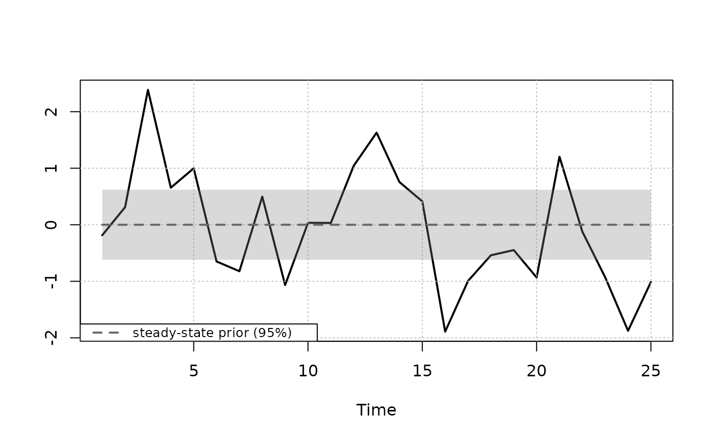
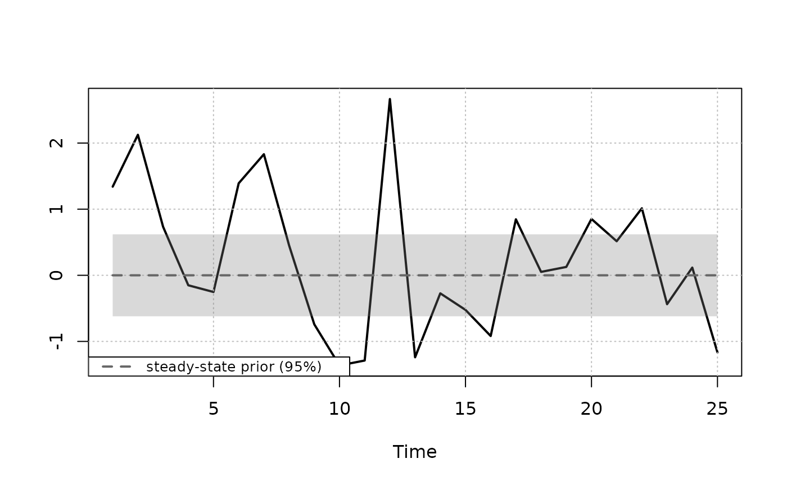

Produces time series plots of the data along with the implied prior for the steady state \(\mu_t = \Psi d_t\).
Arguments
- x
A steady-state
bvarobject that has been passed throughpriors.- interval
Numeric. The prior interval width. Default
0.95, i.e. a 95% prior interval for the steady state.- growth_rate_idx
Integer vector. Indices of variables specified as \(100 (\ln x_{t} - \ln x_{t-1})\), i.e.
100*diff(log(x)), for which the historical series is converted to year-over-year (annual) growth scale \(100 (\ln x_{t} - \ln x_{t-f})\) and the steady-state prior is converted to the annualized (not annual) growth scale \(f100(\ln x_{t} - \ln x_{t-1})\) where \(f\) = frequency. Default isNULL.- plot_idx
Integer vector. Indices of variables to plot. If
NULL(default), all variables are plotted.
Value
Invisibly returns a list with three matrices, lower,
mean, and upper, each of dimension T x k giving the
steady-state prior bounds and mean over the historical sample. For
growth_rate_idx columns, these are on the annualized scale.
Details
The implied prior for the steady state \(\mu_t = \Psi d_t\) is based on the prior for \(\Psi\)
$$\mathrm{vec}(\Psi) \sim \mathrm{N}(\theta_\Psi, \Omega_\Psi)$$
which is specified in priors. Note that it is assumed that \(\Omega_\Psi\) is diagonal.
Examples
# \donttest{
yt <- matrix(rnorm(50), 25, 2)
bvar_obj <- bvar(data = yt)
bvar_obj <- setup(bvar_obj, p = 1, deterministic = "constant")
bvar_obj <- priors(bvar_obj,
lambda_1 = 0.2,
lambda_2 = 0.5,
lambda_3 = 1,
first_own_lag_prior_mean = rep(1, 2),
theta_Psi = rep(0, 2),
Omega_Psi = diag(0.1, 2, 2),
Jeffreys = TRUE)
steady_state_priors_plot(bvar_obj)


# }